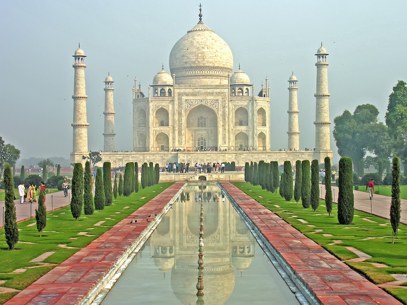
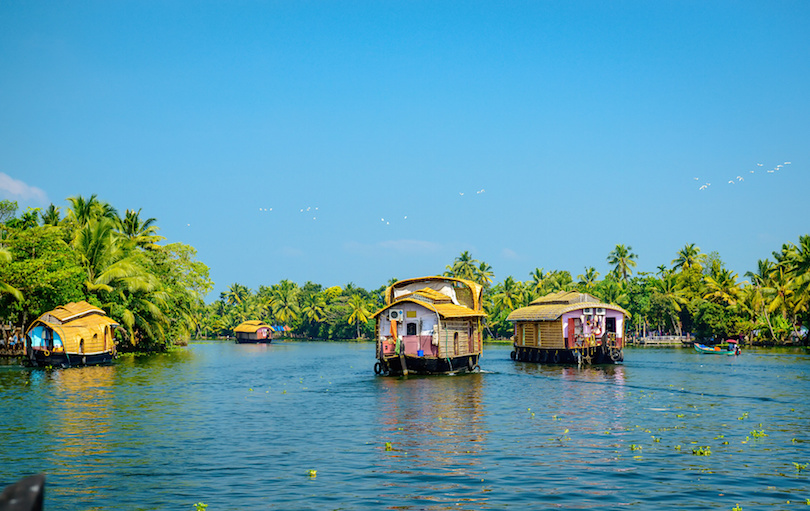
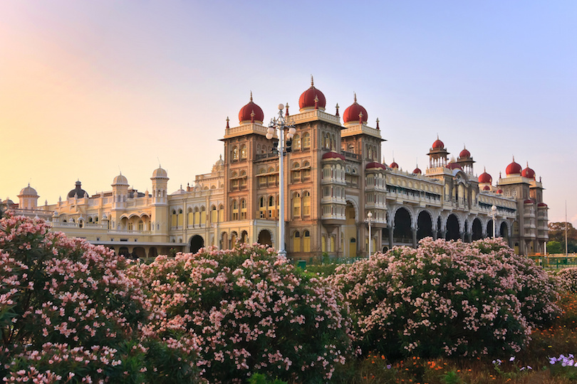
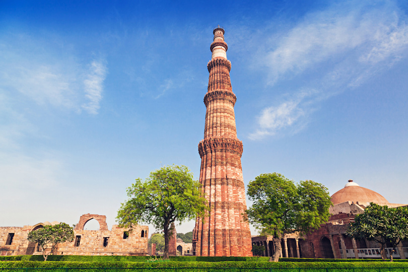
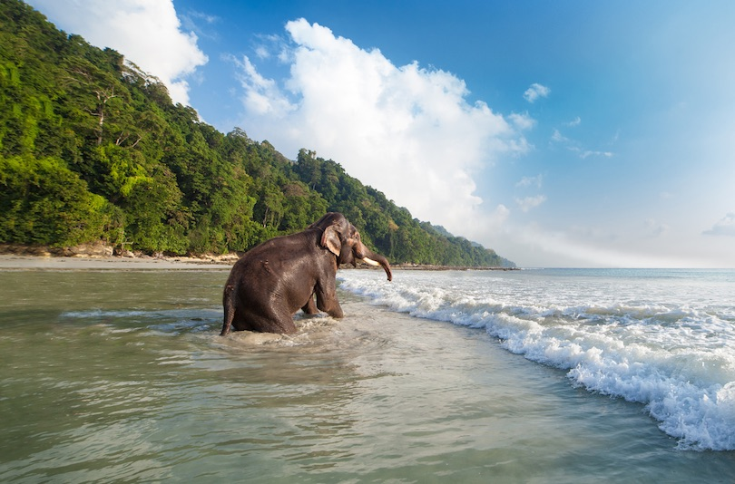
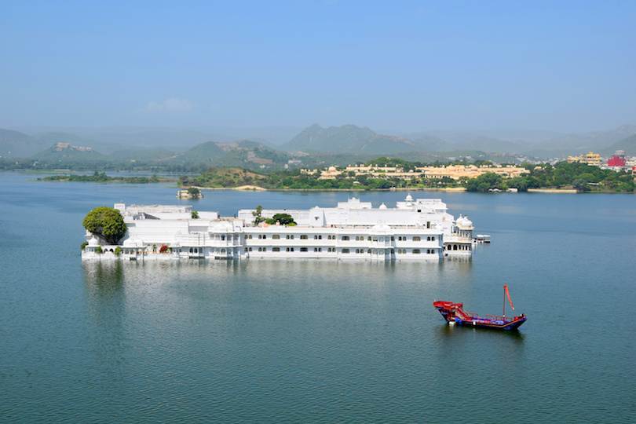
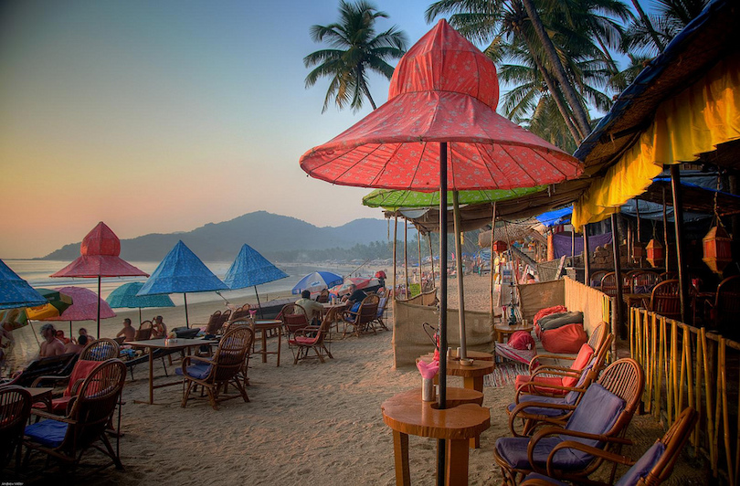

Taj Mahal
The Taj Mahal in Agra is an immense mausoleum of white marble, built between 1632 and 1653 by order of the Mughal emperor Shah Jahan in memory of his favorite wife. Called “a teardrop on the cheek of eternity” it is one of the masterpieces of Mughal architecture, and one of the great tourist attractions in India. Besides the white domed marble mausoleum the Taj Mahal includes several other beautiful buildings, reflecting pools, and extensive ornamental gardens.

Kerala backwaters
The Kerala backwaters are a chain of lagoons and lakes lying parallel to the Arabian Sea coast in the Kerala state. The Kerala backwaters are home to many unique species of aquatic life including crabs, frogs and mudskippers, water birds and animals such as otters and turtles. Today, houseboat tourism is the most popular tourist activity in the backwaters, with several large Kettuvallams.

Mysore Palace
Visitors to Mysore Palace are in for an awesome experience at sthe second most popular tourist attraction in India. The seven palaces that make up the Mysore Palace complex are nothing short of spectacular. The Wodeyars ruled Mysore from 1399 to 1950. Their original palace was built in 1399, and the current palace was completed in 1912. Three stories high, it has deep pink marble domes and an ivory tower.

Varanasi
Situated on the banks of the River Ganges, Varanasi is sacred to Hindus, Buddhists and Jains and also one of the oldest continuously inhabited cities in the world.The scene of pilgrims doing their devotions in the River Ganges at sunrise set against the backdrop of the centuries old temples is probably one of the most impressive sights in the world.

Qutb Minar
Qutb Minar is the second highest brick minaret in the world. The minaret, towering 80 meters (270 feet) into the sky, is made of marble and red sandstone bricks that are carved with sayings from the Koran. Construction took four years, starting in 1193. A circular staircase with 379 steps leads to the top; it is closed to visitors.Nearby is the Iron Pillar, so named because it’s made from metals that don’t rust.

Havelock Island
Ecotourism is encouraged at Havelock Island, the largest island in Ritchie’s Archipelago in the Andaman Islands. Though not as crowded as other islands in Asia, the number of visitors to Havelock Island is on the rise due to its great beaches, casual atmosphere, snorkeling and scuba diving opportunities. The best time to visit is mid-January to mid-May, when the weather is sunny with calmer seas.

Lake Palace
The Lake Palace in Lake Pichola in the city of Udaipur was built as a royal summer palace in the 18th century. Today it is a luxury 5 Star hotel, operating under the “Taj Hotels Resorts and Palaces”. The Lake Palace hotel operates a boat which transports guests to the hotel from a jetty at the City Palace on the east bank of Lake Pichola.

Palolem
Palolem is the most southerly of Goa’s developed beaches and also one of the most beautiful. It is a natural bay surrounded by lofty headlands on either sides, idyllic sea with a gently sloping bed. For those who believe a beach cannot be paradise without a decent selection of cheap restaurants and good hotels, a dose of nightlife and plenty of like-minded people Palolem is the place to be.

Harmandir Sahib
The Harmandir Sahib, better known as the Golden Temple is the main tourist attraction in Amritsar, and the most important religious place to the Sikhs. in the 16th century. In the 19th century, Maharaja Ranjit Singh the upper floors of the temple were covered with gold. always full of thousands of pilgrims from all over India, excited to be at a place that they usually only see on television.